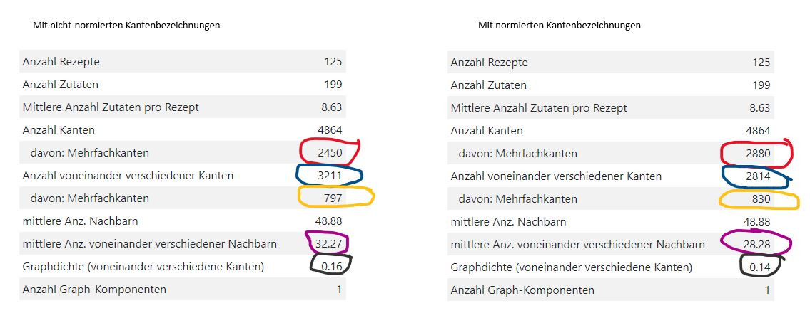

graphLab
"Über die allmähliche Verfertigung der Gedanken beim Reden" heißt ein berühmter Aufsatz von Heinrich von Kleist. Man kann ihn hier finden. Könnte ich so brillant schreiben wie Heinrich von Kleist, würde ich gerne einen Aufsatz mit dem Titel "Über die allmähliche Verfertigung der Gedanken beim Bloggen" schreiben. Leider kann ich nicht so brillant schreiben wie Heinrich von Kleist, und deshalb ziehe ich es vor, einige Gedanken, die mir bei der Verfertigung der graphLab-Seiten durch den Kopf gegangen sind, hier direkt aufzuschreiben. Also keine Erörterung zum Thema "Wie ich rede, schreibe, blogge bzw. denke", sondern schlicht einige Gedanken.
←
- 2021-07-02
-
Hurra! Heute traue ich mich, die hier und jetzt vorhandene Software als graphLab 1.0 anzukündigen! Ich glaube, dass ein Zustand erreicht ist, der diese Ankündigung rechtfertigt. Ich kündige an, obwohl ich weiß, dass noch manches fehlt, und obwohl ich noch eine Menge Ideen im Kopf habe.
Ich habe noch einmal nachgeschaut: Im Februar 2018 habe ich die ersten Ideen zu graphLab im Kochbuch dargestellt, im Herbst 2019 war das Layout der Website im großen und ganzen klar, und jetzt im Sommer 2021 kann ich das Erreichte unter der Versionsnr. 1.0 zusammenfassen. Ich bin mächtig stolz auf das, was ich in diesen rund 3½ Jahren erreicht habe. Nebenbei habe ich ja noch gearbeitet (bis Frühjahr 2019) und ein Haus gebaut.
Über die Weiterentwicklung von graphLab werde ich in einem nächsten Blogbeitrag berichten.
- 2020-02-25
-
Unter dem Stichpunkt "Kulinarische Bewertung" gehe ich derzeit nur auf die Bedeutung einzelner Zutaten ein. Es wird nun Zeit, auch die in der Rezeptsammlung enthaltenen Rezepte zu bewerten. Ich stelle mir folgendes Vorgehen vor:
- Ein Rezept wird umso besser bewertet, je weniger Zutaten verwendet werden, die auch in anderen Rezepten verwendet werden. Zutaten, die in mehreren Rezepten verwendet werden, nenne ich gemeinsame Zutaten oder shared ingredients.
- Zum numerischen Vergleich der Rezepte untereinander berechne ich die sog. SI-Zahl, die ein Maß für die mehrfach verwendeten Zutaten ist. Dabei gilt: Je kleiner die SI-Zahl (s.u.) ist, desto besser.
- Ob eine Zutat i in die Menge der shared ingredients gehört, erkenne ich an der Prävalenz previ der Zutat. Gilt für eine Zutat previ > (1/#rcp), dann gehört diese Zutat in die Menge der shared ingredients. Dabei bezeichnet #rcp die Anzahl der Rezepte in der jeweiligen Rezeptsammlung.
-
Für jedes Rezept bilde ich die folgenden Varianten der SI-Zahl:
- SI: absolute SI-Zahl: Anzahl der shared ingredients in der Zutatenliste des Rezepts
- SIr: relative SI-Zahl: absolute SI-Zahl bezogen auf die Anzahl der Zutaten des Rezepts
- SIw: gewichtete SI-Zahl: In die Berechnung der SI-Zahl geht für jede gemeinsame Zutat ihre Auftretenshäufigkeit in der Rezeptsammlung ein.
- SIrw: gewichtete SI-Zahl bezogen auf die Anzahl der Zutaten des Rezepts
- 2020-02-11
-
Die zuvor dargestellte Lösung 4 funktioniert zwar, aber irgendwie war es mir doch unheimlich, mit zwei mathematischen Graphen operieren zu müssen. Deshalb habe ich mich der Lösung 2 zugewendet. Die offline-Aufbereitung der Daten mit XSLT war kein großes Problem, und auch die beschriebene Zusammensetzung des finalen Graphen aus einzelnen Cliquen hat rasch funktioniert. Ein Problem war jedoch nur schwer zu lösen: die Zuordnung von Bezeichnern zu den Kanten des mathematischen Graphen. Doch dazu im übernächsten Absatz.
Was habe ich bislang erreicht? Aus den Rezept-Daten erzeuge ich ein jsnx
MultiGraph. Jede Kante trägt einen (nicht eindeutigen) Bezeichner, der aus den beiden jeweils eindeutigen Bezeichnern der Knoten zusammengebaut wird, die diese Kante verbindet. Der Kantenbezeichner wird so gebaut, dass der Knotenbezeichner, der zuerst im Alphabet kommt, auch zuerst im Kantenbezeichner steht. Ein Beispiel: Die Kante, die die Zutat mit dem Bezeichnerartischockemit der Zutat mit dem Bezeichneressigverbindet, trägt den Bezeichnerartischocke--essig(und nicht:essig -artischockeDoch nun zum Problem: Zuordnung von Bezeichnern zu den Kanten des mathematischen Graphen. Leider bin ich über einige Probleme im jsnx-API bzw. in der zugehörigen Dokumentation gestolpert.
Im jsnx-API ist nicht immer klar, was eine jsnx-Funktion ist, und was eine Graph-Funktion ist. Ein Beispiel: In meinem nun mittlerweile funktionieren Code stehen die beiden folgenden Zeilen unmittelbar untereinander:
jsnx.relabelNodes(H,mapping,false);
H.edges(true)
relabelNodesist eine jsnx-Funktion, in der der zu bearbeitende Graph in der Parameterliste genannt wird.edgesist im Gegensatz dazu eine Funktion des GraphenH. Die Graph-Funktionedgesträgt im Beispiel oben den Parametertrue, der anzeigt, dass auch die Kanten-Attribute angezeigt werden sollen. Diese Graph-Funktion wird nur in der Getting started-Seite erläutert; in der API-Dokumentation taucht sie nicht auf.Leider gibt es nun im jsnx-API nicht nur die Graph-Funktion
edges, sondern auch eine jsnx-Funktionedges. In der API-Dokumentation heißt es dazu: "Return a list of edges adjacent to nodes in nbunch. Return all edges if nbunch is unspecified or nbunch=None." Meine Erwartung war, dass mir die jsnx-Funktionedgesdas gleiche Ergebnis liefert wie die Graph-Funktionedges, wenn ich nurnbunchweglasse. Das war eine falsche Annahme, und ich habe einen Tag gebraucht, um diesen Fehler zu finden, bzw. dieses Problem zu beheben. Nun weiß ich Bescheid.Weiter oben habe ich gesagt, dass aus den Rezept-Daten einen
MultiGrapherzeuge. Nun war doch gerade die Überlegung, dass ich aus einemMultiGraphnur schwierig die voneinander verschiedenen Kanten ermitteln kann, der Ausgangspunkt zur Überlegung, den mathematischen Graphen auf andere Art und Weise zu bauen. Ja … Mittlerweile ist mir die js-Funktionreduceuntergekommen, und damit kann ich auch aus einemMultiGraphdie voneinander verschiedenen Kanten errechnen. Wer hätte das gedacht? - 2020-01-28
-
Hier nun eine weitere Überlegung zum Thema: Datenstrukturen für Graphen. Dieses Mal geht es nur um den "mathematischen" Graphen. Für die Erzeugung dieses Graphen und für den Zugriff darauf verwende ich das jsnetworkx-API (im folgenden: jsnx-API). Um den Graphen erzeugen zu können, hole ich mir vom Server eine JSON-Datenstruktur mit Graph-Daten (Knoten und Kanten des Zutatengraphen), die sich auf einfache Weise in die Graph-Klasse
MultiGraphdes jsnx-API "einfüttern" lässt. MultiGraph steht für eine "undirected graph class that can store multiedges". In der JSON-Datenstruktur sind also für die Zutatenkombinationen, die in mehreren Rezepten auftauchen, mehrere gleiche Kanten gespeichert. Das funktioniert. Aber …Bei der Berechnung der Graph-Kennzahlen ist mir aufgefallen, dass es nur mit sehr großem Aufwand möglich ist, die Mehrfach-Kanten zu entfernen. Das möchte ich tun, um darstellen zu können, wie viele unterschiedliche Kanten es im Graphen gibt. Damit hätte ich ein Maß für die Anzahl unterschiedliche Zutatenkombinationen, oder anders ausgedrückt: die Anzahl der voneinander verschiedenen food pairings. Wenn ich den sehr großen Aufwand nicht treiben möchte, habe ich vier Möglichkeiten:
- Ich erweitere die JSON-Datenstruktur um ein Datenfeld, in das ich geeignete Daten aufnehme. Diese Daten kann ich offline erzeugen. Die JSON-Datenstruktur wird dadurch größer, und die Übertragung dauert länger. Das ist aber nur ein kleines Problem. Das größere Problem entsteht, wenn Experimente durchgeführt werden, bei denen einzelne Zutaten gelöscht werden. Zur Auswertung eines Experiments muss ja die Anzahl der im Graphen verbliebenen voneinander verschiedenen food pairings berechnet werden. Naja, und diese Zahl kann ich dann nicht vom Server holen …
-
Ich schreibe in meine JSON-Datenstruktur nicht wie bislang Graph-Daten, sondern Rezept-Daten, also
z.B. ein Array mit Elementen aus Rezept-Namen und zugehörigen Zutatenlisten. Vorteil: Ich habe alle
Rezeptinformationen im Browser zur Verfügung und kann damit zusätzlich z.B. ein Kommando
showRecipe(ingredientList)programmieren, mit dem ich Rezepte vollständig im svg-Graphen sichtbar mache. Kann ich aber im Browser aus den Rezept-Daten auch den mathematischen Graphen erzeugen und damit auch die Anzahl der voneinander verschiedenen food pairings errechnen? Eine erste Recherche hat folgendes ergeben: Im jsnx-API kann man aus einer Knotenliste einen vollständigen Graphen automatisch erzeugen. (In Wirklichkeit ist es etwas komplizierter, aber das spielt hier keine Rolle.) Ich könnte also für jedes Rezept aus der zugeordneten Zutatenliste einen vollständigen (Teil-) Graphen erzeugen (graphtheoretisch: eine Clique). Die Teilgraphen (also die Cliquen) lassen sich mit den dafür vorgesehenen jsnx-Funktionen zu einem Gesamtgraphen vereinigen. Nachteil: Die Erzeugung des mathematischen Graphen muss ich komplett neu programmieren. -
Bei der offline-Erzeugung der Graph-Daten schreibe ich mehrfach auftretende food pairings nicht als
mehrfach auftretende Kanten, sondern je food pairing nur eine Kante. Dieser Kante verpasse ich ein
Attribut
weight, dem ein Wert zugeordnet ist, der die Auftretenshäufigkeit dieser Kante anzeigt. Im Browser erzeuge ich aus diesen Graph-Daten keinenMultiGraph, sondern einen (Basis-)Graph. Damit kann ich die Anzahl der voneinander verschiedenen food pairings leicht errechnen. Allerdings wird es etwas komplizierter, wenn ich die Gesamtanzahl der Kanten im Graphen errechnen will. -
Ich erzeuge einen zweiten mathematischen Graphen, und zwar keinen MultiGraph, sondern einen
Graphen der Klasse
Graph(auch bezeichnet als "Basis-Graph"):let H = new jsnx.Graph(). Mit den jsnx-FunktionenaddNodesFrom()bzw.addEdgesFrom()füge ich diesem Graphen Knoten und Kanten aus dem MultiGraphGhinzu:H.addNodesFrom(G.nodes(true));bzw.H.addEdgesFrom(G.edges(true));. Ich gehe davon aus, dass diese beiden Funktionen mehrfach auftretende Kanten schlicht nicht in den Zielgraphen übernehmen. Die API-Beschreibung sagt zumindest folgendes: "There are no errors when adding nodes or edges that already exist" und: "Adding the same edge twice has no effect but any edge data will be updated when each duplicate edge is added". Diese Lösung benötigt möglicherweise viel Speicher, aber … Speicher kostet ja nichts. Allerdings muss ich nun bei jeder Lösch- und Update-Operation zwei mathematische Graphen und den svg-Graphen in die Hand nehmen.
Also ran an die Arbeit. Ich werde zuerst die Lösung 4 ausprobieren.
- 2019-10-16
- Hurra! graphLab ist online! Es fehlt zwar noch ganz viel, aber immerhin ist klar, dass die Netzpräsenz funktionieren wird.
- 2019-10-07
- Mir ist klar geworden, dass ich "Graph" und "graphische Repräsentation des Graphen" noch strikter auseinander halten muss, als ich es schon versucht habe. In der Programmierung der Experiment-Seiten, bei denen diese Trennung besonders wichtig ist, wird es also ein svg-Element geben, das die graphische Repräsentation übernimmt, und ein graph-Element, das die mathematische Graphstruktur enthält. Das bedeutet, dass z.B. das Entfernen von Knoten in beiden Elementen durchgeführt werden muss. Lästig, aber konzeptuell richtig.